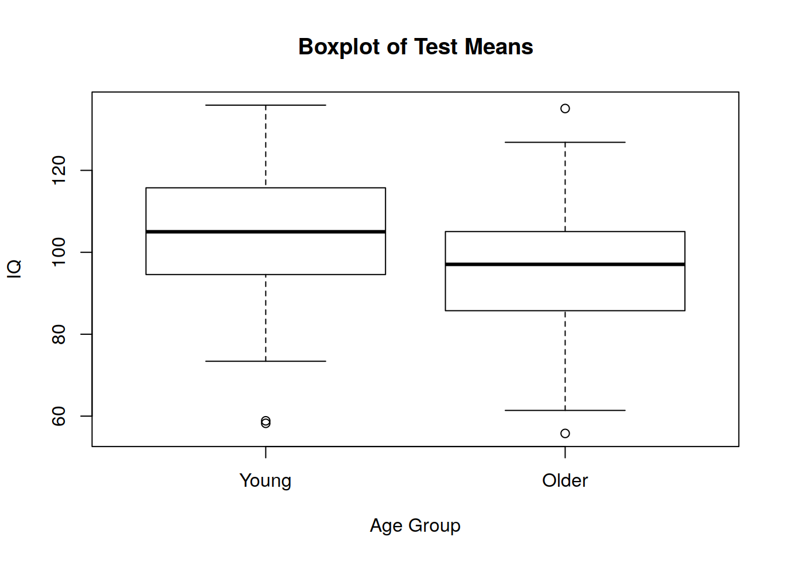
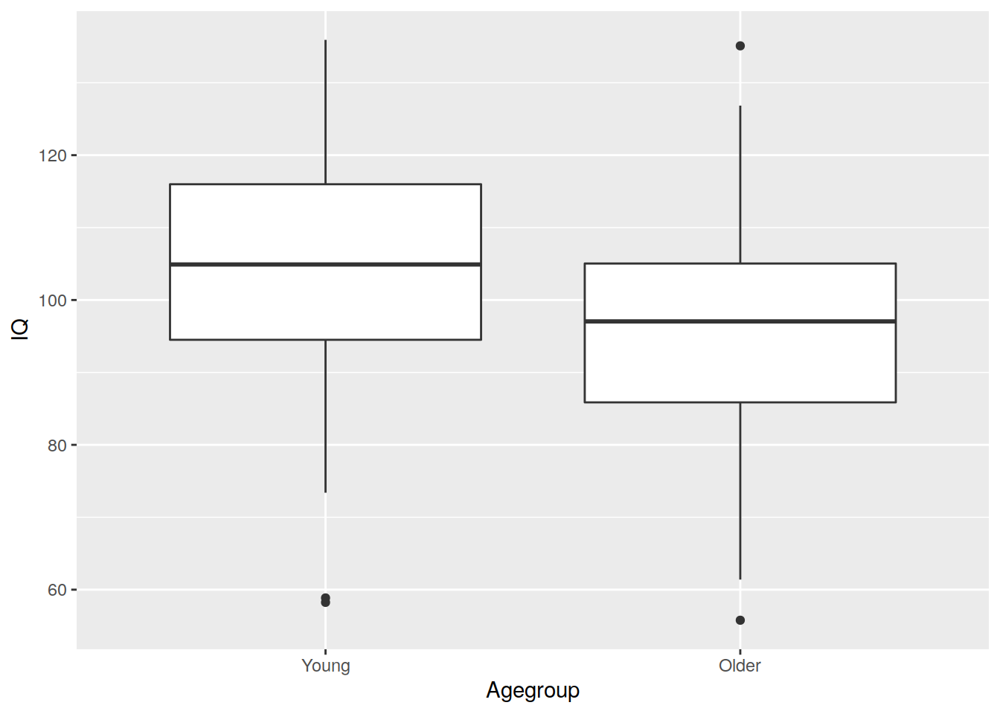
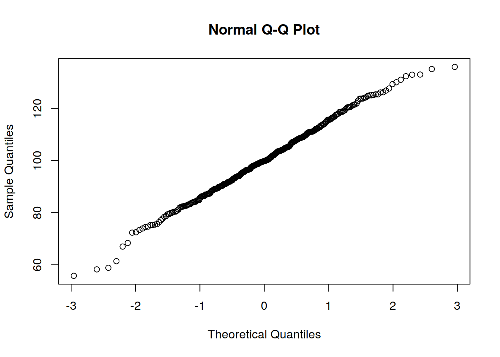

Chapter 6 Lab 6
In today’s lab we are going to start working with some data that looks a little more “real”. What do I mean by real? Well, messy! Up until now we have largely been working with complete data sets where all the values for every variable are within the range we expect and there are no unusual cases. But for any of you who have previously had your hands on real raw data, you will know it rarely looks so neat. So our aims for today are to show you some more R skills for exploring your data to highlight potentially problematic values, and then to put these, and all your other skills to the test to answer some simple research questions using some real (messy) data.
So let’s get started.
6.1 Some more R skills
6.1.1 Two types of subscripting

Task: Create a vector called “vec” with 10 numbers in it (you could use one of the following functions, sample(), or seq(), for example).
vec = seq(2, 20, 2)Task: What does the next command do?
vec[8]## [1] 16Task: What about the following command?
vec[c(2, 8)]## [1] 4 16Task: Now try:
vec[c(F, T, F, F, F, F, F, T, F, F)]## [1] 4 16So what is going on here? In one case the subscripting is being done by index; in the other, it’s being done by truth values (these are called logical subscripts). Having both gives R enormous flexibility when it comes to manipulating data. In general, indexes are what you type in if you want to target specific values, but logical subscripts are the results of tests. Try the following and think about what the output represents:
vec2 <- c(1, 2, NA, 4, 5, 6)
is.na(vec2)## [1] FALSE FALSE TRUE FALSE FALSE FALSEvec2 > 4## [1] FALSE FALSE NA FALSE TRUE TRUEvec2/2 == 2## [1] FALSE FALSE NA TRUE FALSE FALSEWhat will the next two commands do? Think about it first and then try them out:
vec2[vec2 > 4]## [1] NA 5 6vec2[vec2 > 4] <- NAFor matrices, R indexes by row, then by column in the format matrix[row, column].
Task: Let’s create a matrix:
mat <- matrix(rnorm(20, 100, 15), ncol = 5, nrow = 4)
# Here we specify some values (20 from a normal(100, 15) distribution)
# and then tell R how to organise the matrix (col and row sizes)Task: What does the next command do (you have seen this before in previous labs - think about adding values to the empty matrix)?
mat[2, 3]## [1] 101.6555Task: What about the next one?
mat[ , 3]## [1] 106.7639 101.6555 67.9537 101.8156Task: What’s the difference between the folllowing two commands?
mat[2, 3]## [1] 101.6555mat[c(2, 3), ]## [,1] [,2] [,3] [,4] [,5]
## [1,] 81.60815 93.44354 101.6555 107.10758 124.3886
## [2,] 90.11979 94.36973 67.9537 94.17529 106.6617Note that logical tests respect the shape of the input, as much as possible. To see what this means, try the following and think about what you expect the output to look like first:
mat > 100## [,1] [,2] [,3] [,4] [,5]
## [1,] FALSE TRUE TRUE TRUE TRUE
## [2,] FALSE FALSE TRUE TRUE TRUE
## [3,] FALSE FALSE FALSE FALSE TRUE
## [4,] TRUE TRUE TRUE TRUE TRUEYou can use the matrix of truth values like so (the rows and columns are implicit because the truth values come as a matrix):
mat[mat > 100] <- 100 # cap maximum score at 100 throughout6.2 Your Turn
If you’ve followed all this, you should be able to have a good go at the following:
Task: Create a 20-row, 2-column matrix called ‘mat2’ filled with random numbers drawn from a normal population with mean 100 and sd 15.
mat2 <- matrix(rnorm(40, 100, 15), nrow = 20, ncol = 2)Task: Change the value at the 14th and 18th rows of the first column to 200 (in one command).
mat2[c(14, 18), 1] <- 200Task: Change the value of the 3rd row of the second column to 200.
mat2[3, 2] <- 200Task: Find the mean and the sd of all the values (using mean() and sd()).
mean.mat2 <- mean(mat2)
sd.mat2 <- sd(mat2)Task: A typical task we want to carry out when ‘cleaning’ data prior to carrying out our formal analysis is to look for outliers and follow a protocol for dealing with them. For this particular analysis, exclude any values that are 2 standard deviations above the mean. You need to convert any values in the matrix that fit this criteria to NA.
This is a natural extension to some of the examples given above and while the code you produce may look scary it is just a case of joining together multiple parts.
cutoff <- mean.mat2 + (2 * sd.mat2)
mat2[mat2 > cutoff] <- NATask: Check that your code has worked by looking at the matrix either in the console or in the editor view in RStudio. Imagine you had a matrix with 10,000 rows and had just completed the same task and now wanted to check which values had been converted to NA. It would be difficult to do this by simply looking at the matrix. Try:
which(is.na(mat2[ , 1]))Question: What does which() do? Hint: Try is.na(mat2[ , 1]) on its own.
which() returns the index values where the evaluation of the given condition is TRUE. Hence in this case we definitely get 14 and 18 as we set those values to 200. You may also have got other values depending on the random values selected initially.
Task: If you have time: Repeat the exercise above (create a new matrix called mat3). This time, replace the values greater than 2 sds above the mean in column 1 only. Hint: Your command will start with something like “mat3[ , 1][mat3[ , 1] > .]”
mat3 <- matrix(rnorm(40, 100, 15), nrow = 20, ncol = 2)
mat3[c(14, 18), 1] <- 200
mat3[3, 2] <- 200
cutoff <- mean(mat3) + (2 * sd(mat3))
mat3[ , 1][mat3[ , 1] > cutoff] <- NA
mat3## [,1] [,2]
## [1,] 89.40008 60.90289
## [2,] 116.62812 115.50316
## [3,] 130.22246 200.00000
## [4,] 91.52784 101.77641
## [5,] 97.01684 94.22977
## [6,] 89.00230 92.78804
## [7,] 95.49700 101.85408
## [8,] 91.93028 105.84998
## [9,] 93.37270 92.47380
## [10,] 92.94904 79.24207
## [11,] 98.47387 105.40844
## [12,] 90.37563 66.20067
## [13,] 92.16715 101.59119
## [14,] NA 103.80897
## [15,] 124.81714 79.55675
## [16,] 88.33719 117.35854
## [17,] 88.88372 130.10749
## [18,] NA 95.75119
## [19,] 116.19086 98.57315
## [20,] 92.57845 98.29681# Notice the 3rd value in column 2 is still 200 and not NA, so the code worked.6.3 Real Data
OK, now let’s have a look at analysing some real data to answer some research questions. The questions will require you to use your previously learnt R skills (cleaning data, describing data, plotting etc.).
Though some elements may be repetitive, it is good practice to think through your analyses from start to finish each time. Think about what the question is asking and what is needed to answer it - basic descriptives of the variables, plots, tests of assumptions, etc.
6.3.1 The data
The data set is saved on LEARN as a .csv file. You can open this file by downloading it, saving it, and using the read.csv() to open the file. We have have used read.csv() previously so if you can’t recall how it works, use ?read.csv.
The data for this lab come from a study of exercise and cognitive ability in early and later adulthood. All participants were male and randomly sampled within age groups. Data were collected on 325 individuals, 151 from a young adulthood group (aged 20-28 years) and 174 from a later adulthood group (aged 50-58 years). Each person was asked to categorise the regularity of their exercise, and were given an IQ test.
The data are in the file called healthIQ.csv. The variables are as follows:
- ID
- AgeGroup: 1 = Young adulthood; 2 = Later adulthood
- ExGroup: 1 = no exercise; 2 = moderate exercise; 3 = intense exercise
- IQ score: IQ score
In addition to this data, the researchers were given some seperate data from a colleague which used the same IQ test on a sample of approximately the same age as the later adulthood sample. This group had been tested at 2 points in time 3 years apart. The data file repeatIQ.csv contatins this data.The variables are:
- ID
- IQ score wave 1: IQ score
- IQ score wave 2: IQ score
6.3.2 The questions
6.3.2.1 Data Inspection/Cleaning
You are going need to use your newly acquired indexing skills, as well as some of your already established skills to check all variables ahead of the analyses. What you should do here is use some tools (perhaps describe() in the psych package as a starting point?) to get a feel for the data. Are there any strange values, such as impossible values based on the codebook, for the variables given above? Any outliers? Is R treating each variable as the appropriate class (type) of data? e.g. factor or numeric…
This should take you a little bit of time, it is an open ended exercise where you need to use your R skills and judgement to assess the data and fix any problems you encounter before moving on to the following questions:
# reading in and checking the data (my data files are in my project folder)
health = read.csv("data/healthIQ.csv", header = T)
repIQ = read.csv("data/repeatIQ.csv", header = T)
# Basic eyeball
library(psych)
describe(health)## vars n mean sd median trimmed mad min max range
## ID 1 325 163.00 93.96 163.00 163.00 120.09 1 325.00 324.00
## Agegroup 2 325 1.54 0.52 2.00 1.55 0.00 1 4.00 3.00
## ExGroup 3 325 4.72 55.33 2.00 1.63 0.00 1 999.00 998.00
## IQ 4 325 100.00 15.34 99.82 100.18 14.74 20 135.92 115.92
## skew kurtosis se
## ID 0.00 -1.21 5.21
## Agegroup 0.16 -0.54 0.03
## ExGroup 17.86 317.95 3.07
## IQ -0.46 1.70 0.85This tells us a few things:
- There are no
*so we can see that at the moment,AgeGroupandExGroupare not being treated as factors. - Second, we can see that the max value for
AgeGroupis4, yet we know from the code book that there are only 2 groups. So we have a coding error here. - Third, there is a max value of
999forExGroup, which is again out of range (we have 3 groups). - Lastly, our minimum value for IQ is
20. This is very low. On an IQ scale, we would not expect to see a value this low. This suggests we have a data entry problem. So let’s sort these out.
# check factor versus numeric
is.factor(health$Agegroup)## [1] FALSEis.factor(health$ExGroup)## [1] FALSEhealth$Agegroup <- as.factor(health$Agegroup)
health$ExGroup <- as.factor(health$ExGroup)
# Now they are factors let's deal with the levels
levels(health[ , 2])## [1] "1" "2" "4"# so we have got a 4 where we don't need it. So let's give that NA
# NA is R generic code for missing data
levels(health[ , 2]) <- c("Young", "Older", NA)
levels(health[ , 2])## [1] "Young" "Older"# And the same for Exercise Group
levels(health[ , 3])## [1] "1" "2" "3" "999"levels(health[ , 3]) <- c("None", "Mod", "Intense", NA)
levels(health[ , 3])## [1] "None" "Mod" "Intense"# Let's have a look at the effect of using NA
describe(health)## vars n mean sd median trimmed mad min max range
## ID 1 325 163.00 93.96 163.00 163.00 120.09 1 325.00 324.00
## Agegroup* 2 324 1.54 0.50 2.00 1.55 0.00 1 2.00 1.00
## ExGroup* 3 324 1.65 0.58 2.00 1.63 0.00 1 3.00 2.00
## IQ 4 325 100.00 15.34 99.82 100.18 14.74 20 135.92 115.92
## skew kurtosis se
## ID 0.00 -1.21 5.21
## Agegroup* -0.15 -1.98 0.03
## ExGroup* 0.20 -0.71 0.03
## IQ -0.46 1.70 0.85What we can see here is that we now have * and we have an n of 324 for Age group and Exercise group. In other words, R is now recognising that we have some missing data.
We can now do exactly the same for the low IQ value and then the second data set.
# For the IQ data, we can use what you have learnt above
health$IQ[health$IQ < 25] <- NA
summary(health$IQ)## Min. 1st Qu. Median Mean 3rd Qu. Max. NA's
## 55.78 90.19 99.83 100.24 110.51 135.92 1# And the second data set
describe(repIQ)## vars n mean sd median trimmed mad min max range
## ID 1 80 250.26 45.90 256.00 250.69 60.05 174.00 324.00 150.00
## wave1_IQ 2 80 99.33 14.53 98.51 99.36 14.28 64.61 135.83 71.21
## wave2_IQ 3 80 96.55 14.70 96.39 96.56 14.86 63.78 148.10 84.32
## skew kurtosis se
## ID -0.10 -1.35 5.13
## wave1_IQ 0.07 0.08 1.62
## wave2_IQ 0.24 0.74 1.64# This one looks OKYou may have made different decisions, or encountered different potential issues. As long as you engaged with the data and highlighted that it wasn’t perfectly fit for analysis as it was, and took steps to fix it, then you passed the Quest!
For the following questions, you need to think about what statistical procedure you can use to answer each question, and then implement it using R.
Q1. Are age category (young versus old) and health activity category independent?
Chi-square test of independance
# Look at cell counts using xtabs:
xtabs(~ Agegroup + ExGroup, data = health)## ExGroup
## Agegroup None Mod Intense
## Young 38 100 11
## Older 90 78 6Some counts (Intense) are quite low so we will run the test with small N correction
library(lsr)
results = chisq.test(health[ , 2], health[ , 3], correct = T)
results##
## Pearson's Chi-squared test
##
## data: health[, 2] and health[, 3]
## X-squared = 23.521, df = 2, p-value = 7.808e-06# And look at some residuals
results$residuals## health[, 3]
## health[, 2] None Mod Intense
## Young -2.738935 1.974118 1.127668
## Older 2.534547 -1.826803 -1.043518Q2. A researcher has a hypothesis that extreme exercise is quite rare and no/moderate exercise are equally probable. Construct a single test for exercise volume with appropriate probabilities to test this hypothesis.
This is a Chi-square goodness-of-fit test
observed = table(health$ExGroup)
chisq.test(x = observed, p = c(.45, .45, .10))##
## Chi-squared test for given probabilities
##
## data: observed
## X-squared = 16.367, df = 2, p-value = 0.0002792The test is significant, suggesting that the proposed distribution is not reflected in the data
Q3. Do younger and older individuals differ in IQ score?
This is an independent sample t-test
bygroup = describeBy(health, health$Agegroup)
# describes the data for each factor level seperately
as.data.frame(bygroup$Young)[4, c(2:4, 11:12)] # narrow selection to what we are interested in## n mean sd skew kurtosis
## IQ 149 105.2388 14.45316 -0.2760457 0.1754786as.data.frame(bygroup$Older)[4, c(2:4, 11:12)] # narrow selection to what we are interested in## n mean sd skew kurtosis
## IQ 174 95.99017 13.61018 -0.02139273 -0.1367622# plot it
boxplot(health$IQ ~ health$Agegroup,
main = "Boxplot of Test Means",
xlab = "Age Group", ylab = "IQ")
# Or using ggplot2
library(ggplot2)
iq_plot <- ggplot(data = na.omit(health), aes(x = Agegroup, y = IQ))
# use na.omit() to remove the case with NA value for Age Group.
# Otherwise we get a box plot for the NA group....
iq_plot + geom_boxplot()
#Assumptions
qqnorm(y = health$IQ)
shapiro.test(health$IQ)##
## Shapiro-Wilk normality test
##
## data: health$IQ
## W = 0.99598, p-value = 0.5807library(car)
leveneTest(health$IQ ~ health$Agegroup)## Levene's Test for Homogeneity of Variance (center = median)
## Df F value Pr(>F)
## group 1 0.5643 0.4531
## 321# Test
q3 = t.test(formula = IQ ~ Agegroup, data = health, var.equal = T)
q3$statistic## t
## 5.916355q3$parameter## df
## 321q3$p.value## [1] 8.436336e-09Q4. Did IQ scores significantly increase across time points in the later adulthood sample?
This is a paired-sample t-test
describe(repIQ[ , c(2, 3)]) # Descriptive look at the variables## vars n mean sd median trimmed mad min max range skew
## wave1_IQ 1 80 99.33 14.53 98.51 99.36 14.28 64.61 135.83 71.21 0.07
## wave2_IQ 2 80 96.55 14.70 96.39 96.56 14.86 63.78 148.10 84.32 0.24
## kurtosis se
## wave1_IQ 0.08 1.62
## wave2_IQ 0.74 1.64Essentially, follow the solution for the previous question except make sure to set the paired value to TRUE in t.test() and take note of the directional hypothesis using the alternative = "greater" argument.
q4 = t.test(repIQ$wave2_IQ, repIQ$wave1_IQ, alternative = "greater", paired = TRUE)
q4$statistic## t
## -2.088266q4$parameter## df
## 79q4$p.value## [1] 0.9800024